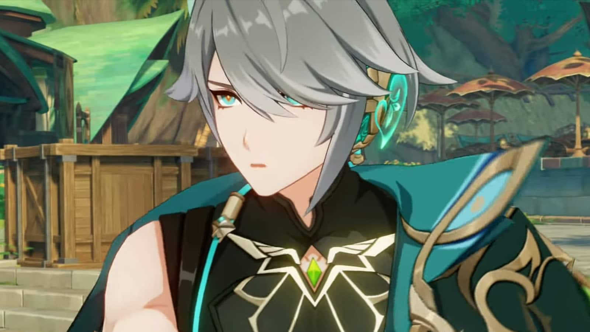
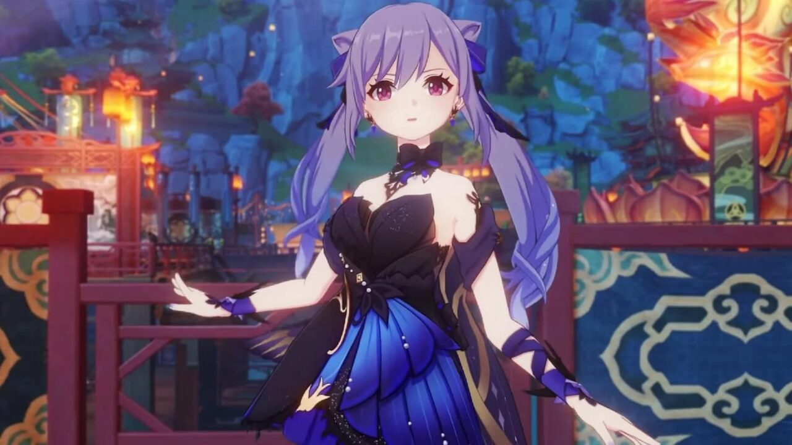

Introduction to My Favourite Game Characters

Alhaitham
is a playable Dendro character in Genshin Impact.
Alhaitham is a member of the Haravatat of the Sumeru Akademiya and the Akademiya's Scribe, responsible for documenting their findings and drafting ordinances.

Keqing
is a playable Electro character in Genshin Impact.
As the Yuheng of the Liyue Qixing, she is someone who seeks her own answers instead of idly letting chaos run amok in Liyue.